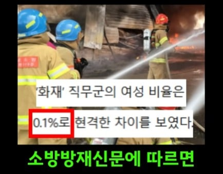

소방관이 부족해서 2만명을 추가로 채용한다고 함
댓글
소간친구 얘기로는 9급 일행이 사무실일근보다 낫다는데 아닌가보네??
과장(사무관)보직을 받고싶은 욕심이 있으면 일행이 나음. 그래서 내가 높은자리 필요없는 사람 이라고 조건 달음ㅋㅋ 급여는 소방9급>행정8급, 행정5급=소방6급(+4년재직) 또이또이함. 뽑아놔서 행정으로 쓸거면 경찰처럼 행정직을 뽑아서 인건비 낮춰야...
체력 차이 느끼면 하지마 ㅋㅋ
방관 2만명 채용
개소리임. 소방은 현장을 더 선호해서 여자들이 사무직 채워주는거임
비동일노동 비동일임금이면 힘들어도 돈 많이 버니 호불호라도 갈리지
비동일노동인데 동일임금 주장하면서 차별 ㅇㅈㄹ 하니 문제지
그럼 걔네한테 ㅈㄹ하지 말라고 해야지, 왜 소방한테 그래
지금이야 국력이 최고점이라 감당 가능하지만 저런 잉여인력에 대한 청구서는 언젠가 국민들이 감당해야되겠지.. 여경, 여소방관, 여군..
할당녀들 똥받이는 국민이ㅠ
소방에서 크게 보는 직렬이 3갬데
구조 응급 소방임.
그중 응급(간호 경력필요) 이 직렬에서야 여자가 많은데
다른 직렬에서 그리 많나 싶은데?
그리고 응급같은경우엔 필요하지않나...?????
ㅇㅇㅇ 이 글도 편향된 정보일거임
그냥 이미지만 딸랑 올린채 사람뽑았는데
현장일할 사람이 적다(근거없음)
여성이 문제다 하는 내용 밖에 없음
사실 기계적으로 여성을 반드시 뽑아야되게끔 목표치를 만드는건 문제가 있는게 맞는데..
이건 너무 근거가 빈약한 주장이라고 봄.
지1랄 현직인데 내가 여자경방 후배들 한두명 받아본줄 아나. 그 얼마 안뽑는 여자경방 바늘구멍 뚫고 들어와도 애초에 잡불화재 하나만나가도 탈탈털리는게 여자경방임 왜냐고? 신체조건이 안되니까.
내가 그래서 다시 관창보조까지 해줘봤다 원래 보조가 힘쓰는게 좀 있어서 여자경방한테 관창잡으라하고 뒤에서 밀어가면서 코치해주고 봤는데 애초에 40mm수관 압력걸린것도 버거워함. 결국 다들 못버티고 내근가거나 센터에서 다른거라도 열심히해서 붙어있다가 육휴가 대표적인 루트임
여자들 위해서라도 여자 경방안뽑는게 나음
체력차이나니까 못뽑는거래도 남녀차별이라고 지랄들해서 뽑았더니 존나 무쓸모하잖음
구조를 바꾸던가 채용을 바꾸던가 우리나라가 소방관 1인 담당 인구수 775명으로 최상위권인데 또 늘린다고? 유럽 일본보다 많다고 해서 왕창늘려줬더만
일단 씨발 치력기준으로 처뽑아야지
그러면 꼴통많이들어와서 안된다더라..
소방은 현장직 가려고들 할텐데
소방은 내근직 싫어한다던데? 그래서 승진을 미끼로 내근직 꼬시고 있음.
소방이 야간근무때 자는걸로 좀 유명하던데.
소방 순경 시험이 같아서 친해지는경우 그런걸로 자랑을 많이 하나봄.
본인이 하고싶어도 여자들 실제 화재현장투입 못시킬거같은데? 상체근력이 진짜 뒤지게약함
그래서 가면 신호수 하고 있더라
소방 구조만 있는게 아니고 응급도 있어서..
소방 구조쪽으로 뽑는거는 반대긴한데
응급은 난 더뽑는거 찬성임.
행정직 할건데 높은 자리 필요없는 사람한테 소방이 개꿀인 이유(경찰은 행정직으로 대체 많이 돼서 제외)
행정업무보는데 행정직보다 월급이 많음(승진은 느린데 느려도 월급이 많음). 1년차부터 행정직 8급~7급 사이의 월급을 받음(호봉표가 다르고 숨만쉬면 나오는 기본수당도 행정직보다 많음)
행정직도 승진 잘된다 한들 대부분은 6급 퇴직. 경찰소방 퇴직계급인 6급갑+4년재직하면 행정직들 5급에 해당하는 월급 나옴.